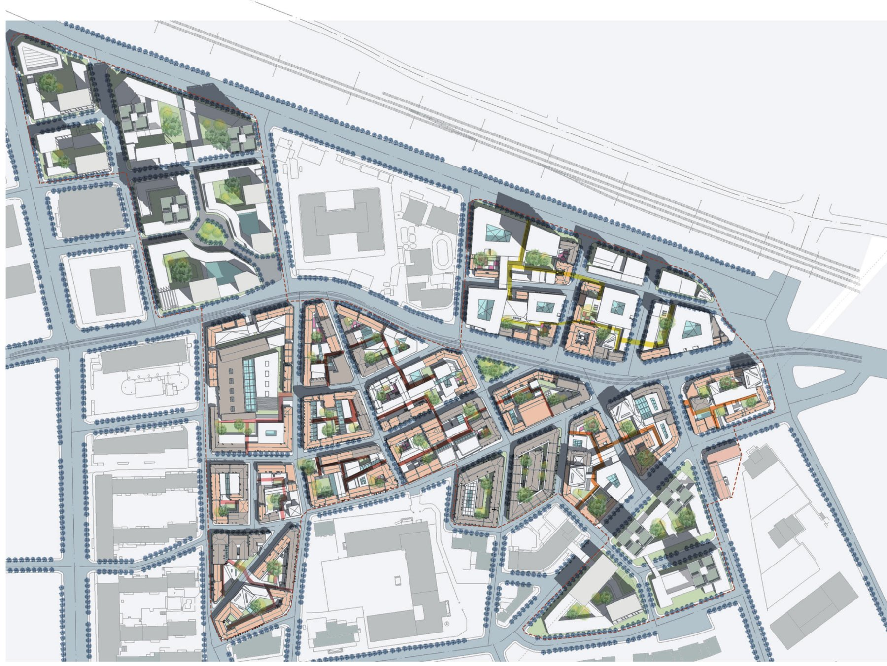

DALIAN / 2018 / ACADEMIC STUDIO
Dongguan Historic District
Retain the historic grain, accommodate new uses.

An adaptable historic fabric
The district study explores how existing streets and enclosed courtyards can accommodate change while retaining the structure of the historic neighborhood.
Retention, adaptation, and infill
The proposal balances retained buildings with new uses, terraces, shared spaces, and landscape. Courtyards and streets provide the organizing structure for gradual spatial transformation.
PORTFOLIO
Project 04 / Pages 17–20. Academic and professional work portfolio.